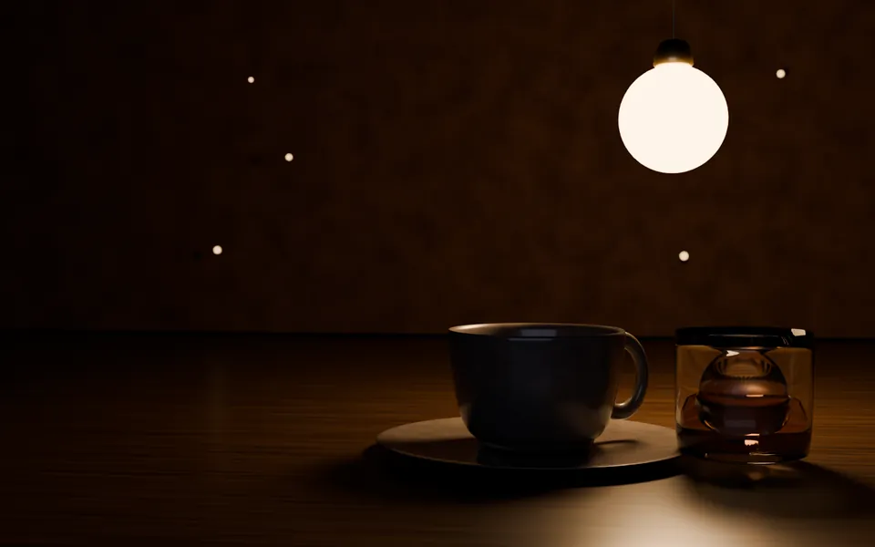

Menu
お品書き
刻が替わると、豆と食べ物が替わります。開いた時刻の刻を先に出しています。価格はすべて税込です。



持ち帰り
豆と焼き菓子だけ持ち帰れます。飲み物は店内でどうぞ。
アレルギー
小麦・卵・乳を使う品があります。気になる方は注文の時にお声がけください。
刻の替わり目
11時と17時をまたいでも、注文した品はそのままお出しします。
Menu
刻が替わると、豆と食べ物が替わります。開いた時刻の刻を先に出しています。価格はすべて税込です。

豆と焼き菓子だけ持ち帰れます。飲み物は店内でどうぞ。
小麦・卵・乳を使う品があります。気になる方は注文の時にお声がけください。
11時と17時をまたいでも、注文した品はそのままお出しします。